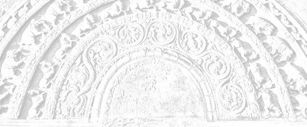

Sermon 15
Namo tassa bhagavato arahato sammāsambuddhassa
Namo tassa bhagavato arahato sammāsambuddhassa
Namo tassa bhagavato arahato sammāsambuddhassaEtaṁ santaṁ, etaṁ paṇītaṁ,
yadidaṁ sabbasaṅkhārasamatho sabbūpadhipaṭinissaggo
taṇhakkhayo virāgo nirodho nibbānaṁ.1“This is peaceful, this is excellent,
namely the stilling of all preparations, the relinquishment of all assets,
the destruction of craving, detachment, cessation, extinction.”
With the permission of the Most Venerable Great Preceptor and the assembly of the venerable meditative monks. This is the fifteenth sermon in the series of sermons on Nibbāna.
Towards the end of our last sermon we happened to quote a brief exhortation on Dhamma from the Udāna, which enabled the ascetic Bāhiya Dārucīriya to liberate his mind from imaginings and attain the state of non-identification, atammayatā, or arahanthood. In order to attempt an exposition of that exhortation of the Buddha, which was pithy enough to bring about instantaneous arahanthood, let us refresh our memory of that brief discourse to Bāhiya.
Tasmātiha te, Bāhiya, evaṁ sikkhitabbaṁ: diṭṭhe diṭṭhamattaṁ bhavissati, sute sutamattaṁ bhavissati, mute mutamattaṁ bhavissati, viññāte viññātamattaṁ bhavissati. Evaṁ hi te, Bāhiya, sikkhitabbaṁ.
Yato kho te, Bāhiya, diṭṭhe diṭṭhamattaṁ bhavissati, sute sutamattaṁ bhavissati, mute mutamattaṁ bhavissati, viññāte viññātamattaṁ bhavissati, tato tvaṁ Bāhiya na tena. Yato tvaṁ Bāhiya na tena, tato tvaṁ Bāhiya na tattha. Yato tvaṁ Bāhiya na tattha, tato tvaṁ Bāhiya nev’idha na huraṁ na ubhayamantarena. Es’ev’anto dukkhassa.2
Well, then, Bāhiya, you had better train yourself thus: In the seen there will be just the seen, in the heard there will be just the heard, in the sensed there will be just the sensed, in the cognized there will be just the cognized. Thus, Bāhiya, should you train yourself.
And when to you, Bāhiya, there will be in the seen just the seen, in the heard just the heard, in the sensed just the sensed, in the cognized just the cognized, then, Bāhiya, you will not be by it. And when, Bāhiya, you are not by it, then, Bāhiya, you are not in it. And when, Bāhiya, you are not in it, then, Bāhiya, you are neither here nor there nor in between. This, itself, is the end of suffering.
As a clue to an exegesis of this discourse, we made an attempt, the other day, to unravel the meaning of the two puzzling terms in the text, namely, na tena and na tattha. These two terms are apparently unrelated to the context. To get at their significance, we brought up a quotation of two lines from the Jarāsutta of the Aṭṭhakavagga of the Sutta Nipāta.
Dhono na hi tena maññati
yadidaṁ diṭṭhasutaṁ mutesu vā.3
Dhona is a term for the arahant in the sense that he has ‘shaken off’ the dust of defilements. So then, these two lines imply that the arahant does not imagine thereby, namely yadidaṁ, in terms of whatever is seen, heard or sensed. These two lines are, as it were, a random exegesis of our riddle terms in the Bāhiyasutta.
The first line itself gives the clue to the rather elliptical term na tena, which carries no verb with it. Our quotation makes it clear that the implication is maññanā, or imagining. Dhono na hi tena maññati, the arahant does not imagine ‘by it’ or ‘thereby’.
Although the Bāhiyasutta makes no mention of the word maññanā, this particular expression seems to suggest that what is implied here is a form of imagining.
By way of further proof we may allude to another quotation, which we had to bring up several times:
Yena yena hi maññanti, tato taṁ hoti aññathā.4
In whatever terms they imagine it, thereby it turns otherwise.
We came across another expression, which has a similar connotation: tena ca mā maññi, “do not be vain thereby”.5
The first thing we can infer, therefore, from the above quoted two lines of the verse, is that what is to be understood by the elliptical expression na tena in the Bāhiyasutta is the idea of imagining, or in short, na tena maññati, “does not imagine thereby”.
Secondly, as to what precisely is implied by the word tena, or ‘by it’, can also be easily inferred from those two lines.
In fact, the second line beginning with the word yadidaṁ, which means ‘namely’ or ‘that is’, looks like a commentary on the first line itself. The dhono, or the arahant, does not imagine ‘thereby’, namely by whatever is seen, heard and sensed.
The verse in question mentions only the three terms diṭṭha, suta and muta, whereas the Bāhiyasutta has as its framework the four terms diṭṭha, suta, muta and viññata. Since what precedes the term na tena in the Bāhiyasutta is the fourfold premise beginning with diṭṭhe diṭṭhamattaṁ bhavissati, “when to you, Bāhiya, there will be in the seen just the seen”, it stands to reason that what the Buddha meant by the term na tena is the attitude of not thinking ‘in terms of’ whatever is seen, heard, sensed or cognized. That is to say, not imagining ‘thereby’.
This same attitude of not imagining ‘thereby’ is what is upheld in the Mūlapariyāyasutta, which we discussed at length on a previous occasion.6 There we explained the word maññanā, ‘me-thinking’, ‘imagining’, taking as a paradigm the first term paṭhavi, occurring in the list of twenty-four terms given there. Among the twenty-four terms, we find mentioned the four relevant to our present problem, namely diṭṭha, suta, muta and viññāta.7
We are now used to the general schema of the Mūlapariyāyasutta, concerning the attitude of the three categories of persons mentioned there. Let us, for instance, take up what is said in that context with regard to the sekha, or the monk in higher training.
Paṭhaviṁ paṭhavito abhiññāya paṭhaviṁ mā maññi, paṭhaviyā mā maññi, paṭhavito mā maññi, paṭhaviṁ me ti mā maññi, paṭhaviṁ mā abhinandi.
This is how the attitude of the sekha is described with regard to paṭhavi, or earth. Suppose we substitute diṭṭha, or the seen, in place of paṭhavi. This is what we should get:
Diṭṭhaṁ diṭṭhato abhiññāya diṭṭhaṁ mā maññi, diṭṭhasmiṁ mā maññi, diṭṭhato mā maññi, diṭṭhaṁ me ti mā maññi, diṭṭhaṁ mā abhinandi.
What the sekha has before him is a step of training, and this is how he has to train in respect of the four things, the seen, the heard, the sensed and the cognized. He should not imagine in terms of them.
For instance, he understands through higher knowledge, and not through the ordinary perception of the worldling, the seen as ‘seen’. Having thus understood it, he has to train in not imagining the seen as a thing, by objectifying it. Diṭṭhaṁ mā maññi, let him not imagine a ‘seen’. Also, let him not imagine ‘in the seen’, or ‘from the seen’. We have already pointed out the relationship between these imaginings and the grammatical structure.8
This objectification of the seen gives rise to acquisitive tendencies, to imagine the seen as ‘mine’. Diṭṭhaṁ me ti mā maññi, let him not imagine ‘I have seen’ or ‘I have a seen’.
This acquisition has something congratulatory about it. It leads to some sort of joy, so the monk in higher training has to combat that too. Diṭṭhaṁ mā abhinandi, let him not delight in the seen.
It seems, then, that the Buddha has addressed the ascetic Bāhiya Dārucīriya in the language of the ariyans, for the very first instruction given to him was “in the seen there will be just the seen”. So highly developed in wisdom and quick witted was Bāhiya9 that the Buddha promptly asked him to stop short at the seen, by understanding that in the seen there is just the seen.
Not to have imaginings or me-thinkings about the seen is therefore the way to stop short at just the seen. If one does not stop short at just the seen, but goes on imagining in terms of ‘in the seen’, ‘from the seen’, etc., as already stated, one will end up with an identification, or tammayatā.
In our last sermon we brought up the term tammayatā. When one starts imagining in such terms about something, one tends to become one with it, tammayo, even as things made out of gold and silver are called golden, suvaṇṇamaya, and silvery, rajatamaya. It is as if one who grasps a gem becomes its owner and if anything happens to the gem he is affected by it. To possess a gem is to be possessed by it.
When one gets attached and becomes involved and entangled in the seen through craving, conceit and views, by imagining egoistically, the result is identification, tammayatā, literally ‘of-that-ness’.
In this present context, however, the Buddha puts Bāhiya Dārucīriya on the path to non-identification, or atammayatā. That is to say, he advises Bāhiya not to indulge in such imaginings. That attitude leads to non-identification and detachment. When one has no attachments, involvements and entanglements regarding the seen, one does not have the notion of being in the seen.
Once we spoke about a children’s hut into which the mother was invited.10 When she crept into that plaything of a hut, she did not seriously entertain the thought of being ‘in’ it. Similarly if one does not indulge in imaginings, one has no notion of being ‘in’ the seen.
This, then, is the significance of the words na tattha, ‘not in it’.
Yato tvaṁ Bāhiya na tena, tato tvaṁ Bāhiya na tattha.
When, Bāhiya, you are not by it, then, Bāhiya, you are not in it.
That is to say, when for instance Bāhiya does not imagine ‘by the seen’, he is not ‘in the seen’. Likewise, he is not in the heard, sensed or cognized. From this we can deduce the meaning of what follows.
Yato tvaṁ Bāhiya na tattha, tato tvaṁ Bāhiya nev’idha na huraṁ na ubhayamantarena.
At whatever moment you neither imagine ‘by the seen’ nor entertain the notion of being ‘in the seen’, which is tantamount to projecting an ‘I’ into the seen, then you are neither here nor there nor in between.
In a number of earlier sermons we have sufficiently explained the significance of the two ends and the middle as well as the above, the below and the across in the middle. What do they signify?
As we happened to point out on an earlier occasion, it is by driving the peg of the conceit ‘am’ that a world is measured out, construed or postulated.11 We also pointed out that the grammatical structure springs up along with it. That is to say, together with the notion ‘am’ there arises a ‘here’. ‘Here’ am I, he is ‘there’ and you are ‘yon’ or in front of me. This is the basic ground plan for the grammatical structure, known to grammar as the first person, the second person and the third person.
A world comes to be measured out and a grammatical structure springs up. This, in fact, is the origin of proliferation, or papañca. So it is the freedom from that proliferation that is meant by the expression nev’idha na huraṁ na ubhayamantarena, “neither here nor there nor between the two”. The notion of one’s being in the world, or the bifurcation as ‘I’ and ‘the world’, is no longer there. Es’ev’anto dukkhassa, this, then, is the end of suffering, Nibbāna.
The fundamental first principles underlying this short exhortation of the Buddha could thus be inferred to some extent. We could perhaps elicit something more regarding the significance of the four key terms in question.
In the section of the fours in the Aṅguttara Nikāya we come across four modes of noble usages, cattāro ariya vohārā,12 namely:
- diṭṭhe diṭṭhavāditā
- sute sutavāditā
- mute mutavāditā
- viññāte viññātavāditā
These four are:
- asserting the fact of having seen in regard to the seen,
- asserting the fact of having heard in regard to the heard,
- asserting the fact of having sensed in regard to the sensed,
- asserting the fact of having cognized in regard to the cognized.
Generally speaking, these four noble usages stand for the principle of truthfulness. In some discourses, as well as in the Vinayapiṭaka, these terms are used in that sense. They are the criteria of the veracity of a statement in general, not so much in a deep sense.
However, there are different levels of truth. In fact, truthfulness is a question of giving evidence that runs parallel with one’s level of experience. At higher levels of experience or realization, the evidence one gives also changes accordingly.
The episode of Venerable Mahā Tissa Thera is a case in view.13 When he met a certain woman on his way, who displayed her teeth in a wily giggle, he simply grasped the sign of her teeth. He did not totally refrain from grasping a sign, but took it as an illustration of his meditation subject. Later, when that woman’s husband, searching for her, came up to him and asked whether he had seen a woman, he replied that all he saw was a skeleton. Now that is a certain level of experience.
Similarly the concept of truthfulness is something that changes with levels of experience. There are various degrees of truth, based on realization. The highest among them is called paramasacca.14 As to what that is, the Dhātuvibhaṅgasutta itself provides the answer in the following statement of the Buddha.
Etañhi, bhikkhu, paramaṁ ariyasaccaṁ yadidaṁ amosadhammaṁ Nibbānaṁ.15
Monk, this is the highest noble truth, namely Nibbāna, that is of a non-falsifying nature.
All other truths are falsified when the corresponding level of experience is transcended. But Nibbāna is the highest truth, since it can never be falsified by anything beyond it.
The fact that it is possible to give evidence by this highest level of experience comes to light in the Chabbisodhanasutta of the Majjhima Nikāya. In this discourse we find the Buddha instructing the monks as to how they should interrogate a fellow monk who claims to have attained arahanthood. The interrogation has to follow certain criteria, one of which concerns the four standpoints diṭṭha, suta, muta and viññāta, the seen, the heard, the sensed and the cognized.
What sort of answer a monk who rightly claims to arahanthood would give is also stated there by the Buddha. It runs as follows:
Diṭṭhe kho ahaṁ, āvuso, anupāyo anapāyo anissito appaṭibaddho vippamutto visaṁyutto vimariyādikatena cetasā viharāmi.16
Here, then, is the highest mode of giving evidence in the court of Reality as an arahant.
Friends, with regard to the seen, I dwell unattracted, unrepelled, independent, uninvolved, released, unshackled, with a mind free from barriers.
He is unattracted, anupāyo, by lust and unrepelled, anapāyo, by hate. He is not dependent, anissito, on cravings, conceits and views. He is not involved, appaṭibaddho, with desires and attachments and is released, vippamutto, from defilements. He is no longer shackled, visaṁyutto, by fetters and his mind is free from barriers.
What these barriers are, we can easily infer. They are the bifurcations such as the internal and the external, ajjhatta bahiddhā, which are so basic to what is called existence, bhava. Where there are barriers, there are also attachments, aversions and conflicts. Where there is a fence, there is defence and offence.
So the arahant dwells with a mind unpartitioned and barrierless, vimariyādikatena cetasā. To be able to make such a statement is the highest standard of giving evidence in regard to the four noble usages.
It is also noteworthy that in the Bāhiyasutta the Buddha has presented the triple training of higher morality, higher concentration and higher wisdom, adhisīla, adhicitta and adhipaññā, through these four noble usages. The commentary, too, accepts this fact.17 But this is a point that might need clarification. How are we to distinguish between morality, concentration and wisdom in this brief exhortation?
Now how does the exhortation begin? It opens with the words tasmātiha te, Bāhiya, evaṁ sikkhitabbaṁ, “well then, Bāhiya, you should train yourself thus.” This is an indication that the Buddha introduced him to a course of training, and this is the preliminary training:
Diṭṭhe diṭṭhamattaṁ bhavissati, sute sutamattaṁ bhavissati, mute mutamattaṁ bhavissati, viññāte viññātamattaṁ bhavissati.
In the seen there will be just the seen, in the heard there will be just the heard, in the sensed there will be just the sensed, in the cognized there will be just the cognized.
What is hinted at by this initial instruction is the training in higher morality, adhisīlasikkhā. The most important aspect of this training is the morality of sense-restraint, indriya saṁvara sīla. The first principles of sense-restraint are already implicit in this brief instruction.
If one stops short at just the seen in regard to the seen, one does not grasp a sign in it, or dwell on its details. There is no sorting out as ‘this is good’, ‘this is bad’. That itself conduces to sense-restraint.
So we may conclude that the relevance of this brief instruction to the morality of sense-restraint is in its enjoining the abstention from grasping a sign or dwelling on the details. That is what pertains to the training in higher morality, adhisīlasikkha.
Let us see how it also serves the purpose of training in higher concentration. To stop at just the seen in the seen is to refrain from discursive thought, which is the way to abandon mental hindrances. It is discursive thought that brings hindrances in its train. So here we have what is relevant to the training in higher concentration as well.
Then what about higher wisdom, adhipaññā? Something more specific has to be said in this concern. What precisely is to be understood by higher wisdom in this context? It is actually the freedom from imaginings, maññanā, and proliferation, papañca.
If one stops short at just the seen in the seen, such ramifications as mentioned in discourses like the Mūlapariyāyasutta do not come in at all. The tendency to objectify the seen and to proliferate it as ‘in it’, ‘from it’ and ‘it is mine’ receives no sanction. This course of training is helpful for the emancipation of the mind from imaginings and proliferations.
The Buddha has compared the six sense-bases, that is eye, ear, nose, tongue, body and mind, to a deserted village.
Suññaṁ idaṁ attena vā attaniyena vā.18
This is void of a self or anything belonging to a self.
All these sense-bases are devoid of a self or anything belonging to a self. Therefore they are comparable to a deserted village, a village from which all inhabitants have fled.
The dictum “in the seen there will be just the seen” is an advice conducive to the attitude of regarding the six sense-bases as a deserted village. This is what pertains to higher wisdom in the Buddha’s exhortation.
Papañca, or prolific conceptualisation, is a process of transaction with whatever is seen, heard, sensed, etc. So here there is no process of such transaction. Also, when one trains oneself according to the instruction “in the seen there will be just the seen, in the heard there will be just the heard, in the sensed there will be just the sensed, in the cognized there will be just the cognized”, that identification implied by the term tammayatā will no longer be there.
Egotism, the conceit ‘am’ and all what prompts conceptual proliferation will come to an end. This kind of training uproots the peg of the conceit ‘am’, thereby bringing about the cessation of prolific conceptualisation, the cessation of becoming and the cessation of suffering.
We can therefore conclude that the entire triple training is enshrined in this exhortation. What happens as a result of this training is indicated by the riddle like terms na tena, na tattha, nev’idha na huraṁ na ubhayamantarena.
When the wisdom of the ascetic Bāhiya Dārucīriya had sufficiently matured by following the triple course of training, the Buddha gave the hint necessary for realization of that cessation of becoming, which is Nibbāna, in the following words:
Then, Bāhiya, you will not be by it. And when, Bāhiya, you are not by it, then, Bāhiya, you are not in it. And when, Bāhiya, you are not in it, then, Bāhiya, you are neither here nor there nor in between. This, itself, is the end of suffering.
This sermon, therefore, is one that succinctly presents the quintessence of the Saddhamma. It is said that the mind of the ascetic Bāhiya Dārucīriya was released from all influxes immediately on hearing this exhortation.
Now let us come back to the sequence of events in the story as mentioned in the Udāna. It was after the Buddha had already set out on his alms round that this sermon was almost wrenched from him with much insistence. When it had proved its worth, the Buddha continued with his alms round. Just then a cow with a young calf gored the arahant Bāhiya Dārucīriya to death.
While returning from his alms round with a group of monks, the Buddha saw the corpse of the arahant Bāhiya. He asked those monks to take the dead body on a bed and cremate it. He even told them to build a cairn enshrining his relics, saying: “Monks, a co-celibate of yours has passed away.”
Those monks, having carried out the instructions, came back and reported to the Buddha. Then they raised the question: “Where has he gone after death, what is his after death state?” The Buddha replied:
Monks, Bāhiya Dārucīriya was wise, he lived up to the norm of the Dhamma, he did not harass me with questions on Dhamma. Monks, Bāhiya Dārucīriya has attained Parinibbāna.
In conclusion, the Buddha uttered the following verse of uplift:
Yattha āpo ca paṭhavī,
tejo vāyo na gādhati,
na tattha sukkā jotanti,
ādicco nappakāsati,
na tattha candimā bhāti,
tamo tattha na vijjati.Yadā ca attanāvedi,
muni monena brāhmaṇo,
atha rūpā arūpā ca,
sukhadukkhā pamuccati.19
On the face of it, the verse seems to imply something like this:
Where water, earth, fire and air
Do not find a footing,
There the stars do not shine,
And the sun spreads not its lustre,
The moon does not appear resplendent there,
And no darkness is to be found there.When the sage, the brahmin with wisdom,
Understands by himself,
Then is he freed from form and formless,
And from pleasure and pain as well.
The commentary to the Udāna, Paramatthadīpanī, gives a strange interpretation to this verse. It interprets the verse as a description of the destination of the arahant Bāhiya Dārucīriya after he attained Parinibbāna, the place he went to.20 Even the term Nibbānagati is used in that connection, the ‘place’ one goes to in attaining Parinibbāna. That place, according to the commentary, is not easily understood by worldlings. Its characteristics are said to be the following:
The four elements, earth, water, fire and air, are not there. No sun, or moon, or stars are there. The reason why the four elements are negated is supposed to be the fact that there is nothing that is compounded in the uncompounded Nibbāna element, into which the arahant passes away.
Since no sun, or moon, or stars are there in that mysterious place, one might wonder why there is no darkness either. The commentator tries to forestall the objection by stating that it is precisely because one might think that there should be darkness when those luminaries are not there, that the Buddha emphatically negates it. So the commentarial interpretation apparently leads us to the conclusion that there is no darkness in the Nibbāna element, even though no sun or moon or stars are there.
The line of interpretation we have followed throughout this series of sermons allows us to depart from this commentarial trend. That place where earth, water, fire and air do not find a footing is not where the arahant Bāhiya Dārucīriya had ‘gone’ when he passed away. The commentator seems to have construed this verse as a reply the Buddha gave to the question raised by those monks. Their question was: “Where has he gone after death, what is his after death state?” They were curious about his borne.
But when we carefully examine the context, it becomes clear that they raised that question because they did not know that the corpse they cremated was that of an arahant. Had they known it, they would not have even asked that question. That is precisely the reason for the Buddha’s declaration that Bāhiya attained Parinibbāna, a fact he had not disclosed before. He added that Bāhiya followed the path of Dhamma without harassing him with questions and attained Parinibbāna.
Now that is the answer proper. To reveal the fact that Bāhiya attained Parinibbāna is to answer the question put by those inquisitive monks. Obviously they knew enough of the Dhamma to understand then, that their question about the borne and destiny of Venerable Bāhiya was totally irrelevant.
So then the verse uttered by the Buddha in conclusion was something extra. It was only a joyous utterance, a verse of uplift, coming as a grand finale to the whole episode.
Such verses of uplift are often to be met with in the Udāna. As we already mentioned, the verses in the Udāna have to be interpreted very carefully, because they go far beyond the implications of the story concerned.21 They invite us to take a plunge into the ocean of Dhamma. Just one verse is enough. The text is small but deep. The verse in question is such a spontaneous utterance of joy. It is not the answer to the question, “Where did he go?”
Well, in that case, what are we to understand by the word yattha, ‘where’?
We have already given a clue to it in our seventh sermon with reference to that non-manifestative consciousness, anidassana viññāṇa. What the Buddha describes in this verse, is not the place where the Venerable arahant Bāhiya went after his demise, but the non-manifestative consciousness he had realized here and now, in his concentration of the fruit of arahanthood, or arahattaphalasamādhi.
Let us hark back to the four lines quoted in the Kevaḍḍhasutta.
Viññāṇaṁ anidassanaṁ,
anantaṁ sabbato pabhaṁ,
ettha āpo ca paṭhavī,
tejo vāyo na gādhati.22Consciousness which is non-manifestative,
Endless, lustrous on all sides,
It is here that water, earth,
Fire and air no footing find.
The first two lines of the verse in the Bāhiyasutta, beginning with the correlative yattha, ‘where’, find an answer in the last two lines quoted above from the Kevaḍḍhasutta.
What is referred to as ‘it is here’, is obviously the non-manifestative consciousness mentioned in the first two lines. That problematic place indicated by the word yattha, ‘where’, in the Bāhiyasutta, is none other than this non-manifestative consciousness.
We had occasion to explain at length in what sense earth, water, fire and air find no footing in that consciousness. The ghostly elements do not haunt that consciousness. That much is clear.
But how are we to understand the enigmatic reference to the sun, the moon and the stars? It is said that the stars do not shine in that non-manifestative consciousness, the sun does not spread its lustre and the moon does not appear resplendent in it, nor is there any darkness. How are we to construe all this?
Briefly stated, the Buddha’s declaration amounts to the revelation that the sun, the moon and the stars fade away before the superior radiance of the non-manifestative consciousness, which is infinite and lustrous on all sides.
How a lesser radiance fades away before a superior one, we have already explained with reference to the cinema in a number of earlier sermons.23 To sum up, the attention of the audience in a cinema is directed to the narrow beam of light falling on the screen. The audience, or the spectators, are seeing the scenes making up the film show with the help of that beam of light and the thick darkness around.
This second factor is also very important. Scenes appear not simply because of the beam of light. The thickness of the darkness around is also instrumental in it. This fact is revealed when the cinema hall is fully lit up. If the cinema hall is suddenly illuminated, either by the opening of doors and windows or by some electrical device, the scenes falling on the screen fade away as if they were erased. The beam of light, which was earlier there, becomes dim before the superior light. The lesser lustre is superseded by a greater lustre.
We might sometimes be found fault with for harping on this cinema simile, on the ground that it impinges on the precept concerning abstinence from enjoying dramatic performances, song and music. But let us consider whether this cinema is something confined to a cinema hall.
In the open air theatre of the world before us, a similar phenomenon of supersedence is occurring. In the twilight glow of the evening the twinkling stars enable us to faintly figure out the objects around us, despite the growing darkness. Then the moon comes up. Now what happens to the twinkling little stars? They fade away, their lustre being superseded by that of the moon.
Then we begin to enjoy the charming scenes before us in the serene moonlit night. The night passes off. The day light gleam of the sun comes up. What happens then? The soft radiance of the moon wanes before the majestic lustre of the sun. The moon gets superseded and fades away. Full of confidence we are now watching the multitude of technicoloured scenes in this massive theatre of the world. In broad daylight, when sunshine is there, we have no doubt about our vision of objects around us.
But now let us suppose that the extraneous defilements in the mind of a noble disciple, treading the noble eightfold path, get dispelled, allowing its intrinsic lustre of wisdom to shine forth. What happens then? The stars, the moon and the sun get superseded by that light of wisdom. Even the forms that one had seen by twilight, moonlight and sunlight fade away and pale into insignificance. The umbra of form and the penumbra of the formless get fully erased.
In the previous sermon we happened to mention that form and space are related to each other, like the picture and its background. Now all this is happening in the firmament, which forms the background. We could enjoy the scenes of the world cinema, because of that darkness. The twilight, the moonlight and the sunlight are but various levels of that darkness.
The worldling thinks that one who has eyes must surely see if there is sunshine. He cannot think of anything beyond it. But the Buddha has declared that there is something more radiant than the radiance of the sun.
Natthi paññāsamā ābhā,24
there is no radiance comparable to wisdom.
Let us hark back to a declaration by the Buddha we had already quoted in a previous sermon.
Catasso imā, bhikkhave, pabhā. Katamā catasso? Candappabhā, sūriyappabhā, aggippabhā, paññappabhā, imā kho, bhikkhave, catasso pabhā. Etadaggaṁ, bhikkhave, imāsaṁ catunnaṁ pabhānaṁ, yad idaṁ paññappabhā.25
Monks, there are these four lustres. What four? The lustre of the moon, the lustre of the sun, the lustre of fire, the lustre of wisdom. These, monks, are the four lustres. This, monks, is the highest among these four lustres, namely the lustre of wisdom.
So, then, we can now understand why the form and the formless fade away. This wisdom has a penetrative quality, for which reason it is called nibbedhikā paññā.26
When one sees forms, one sees them together with their shadows. The fact that one sees shadows there, is itself proof that darkness has not been fully dispelled. If light comes from all directions, there is no shadow at all. If that light is of a penetrative nature, not even form will be manifest there.
Now it is mainly due to what is called ‘form’ and ‘formless’, rūpa/arūpa, that the worldling experiences pleasure and pain in a world that distinguishes between a ‘pleasure’ and a ‘pain’.
Though we have departed from the commentarial path of exegesis, we are now in a position to interpret the cryptic verse in the Bāhiyasutta perhaps more meaningfully. Let us now recall the verse in question.
Yattha āpo ca paṭhavī,
tejo vāyo na gādhati,
na tattha sukkā jotanti,
ādicco nappakāsati,
na tattha candimā bhāti,
tamo tattha na vijjati.Yadā ca attanāvedi,
muni monena brāhmaṇo,
atha rūpā arūpā ca,
sukhadukkhā pamuccati.27
The verse can be fully explained along the lines of interpretation we have adopted. By way of further proof of the inadequacy of the commentarial explanation of the references to the sun, the moon and the stars in this verse, we may draw attention to the following points.
According to the commentary the verse is supposed to express that there are no sun, moon or stars in that mysterious place called anupādisesa Nibbānadhātu, which is incomprehensible to worldlings.
We may, however, point out that the verbs used in the verse in this connection do not convey the sense that the sun, the moon and the stars are simply non existent there. They have something more to say.
For instance, with regard to the stars it is said that there the stars do not shine, na tattha sukkā jotanti. If in truth and fact stars are not there, some other verb like na dissanti, ‘are not seen’, or na vijjanti, ‘do not exist’, could have been used.
With reference to the sun and the moon, also, similar verbs could have been employed. But what we actually find here, are verbs expressive of spreading light, shining, or appearing beautiful:
Na tattha sukkā jotanti, “there the stars do not shine”;
ādicco nappakāsati, “the sun spreads not its lustre”;
na tattha candimā bhāti, “the moon does not appear resplendent there”.
These are not mere prosaic statements. The verse in question is a joyous utterance, Udānagāthā, of extraordinary depth. There is nothing recondite about it.
In our earlier assessment of the commentarial interpretation we happened to lay special stress on the words ‘even though’. We are now going to explain the significance of that emphasis. For the commentary, the line tamo tattha na vijjati, “no darkness is to be found there”, is a big riddle. The sun, the moon and the stars are not there. Even though they are not there, presumably, no darkness is to be found there.
However, when we consider the law of superseding, we have already mentioned, we are compelled to give a totally different interpretation. The sun, the moon and the stars are not manifest, precisely because of the light of that non-manifestative consciousness. As it is lustrous on all sides, sabbato pabha, there is no darkness there and luminaries like the stars, the sun and the moon do not shine there.
This verse of uplift thus reveals a wealth of information relevant to our topic. Not only the exhortation to Bāhiya, but this verse also throws a flood of light on the subject of Nibbāna.
That extraordinary place, which the commentary often identifies with the term anupādisesa Nibbānadhātu, is this mind of ours. It is in order to indicate the luminosity of this mind that the Buddha used those peculiar expressions in this verse of uplift.
What actually happens in the attainment to the fruit of arahanthood? The worldling discerns the world around him with the help of six narrow beams of light, namely the six sense-bases. When the superior lustre of wisdom arises, those six sense-bases go down. This cessation of the six sense-bases could also be referred to as the cessation of name-and-form, nāmarūpanirodha, or the cessation of consciousness, viññāṇanirodha.
The cessation of the six sense-bases does not mean that one does not see anything. What one sees then is voidness. It is an in-‘sight’. He gives expression to it with the words suñño loko, ‘void is the world’.
What it means is that all the sense-objects, which the worldling grasps as real and truly existing, get penetrated through with wisdom and become non-manifest.
If we are to add something more to this interpretation of the Bāhiyasutta by way of review, we may say that this discourse illustrates the six qualities of the Dhamma, namely svākkhāto, well proclaimed, sandiṭṭhiko, visible here and now, akāliko, timeless, ehipassiko, inviting to come and see, opanayiko, leading onward and paccattaṁ veditabbo viññūhi, to be realized by the wise each one by himself. These six qualities are wonderfully exemplified by this discourse.
In a previous sermon we had occasion to bring up a simile of a dewdrop, dazzling in the morning sunshine.28
The task of seeing the spectrum of rainbow colours through a tiny dewdrop hanging from a creeper or a leaf is one that calls for a high degree of mindfulness. Simply by standing or sitting with one’s face towards the rising sun, one will not be able to catch a glimpse of the brilliant spectrum of rainbow colours through the dewdrop. It requires a particular viewpoint. Only when one focuses on that viewpoint, can one see it.
So it is with the spectrum of the six qualities of the Dhamma. Here, too, the correct viewpoint is a must, and that is right view. Reflection on the meaning of deep discourses helps one to straighten up right view.
Where right view is lacking, morality inclines towards dogmatic attachment to rituals, sīlabbataparāmāsa. Concentration turns out to be wrong concentration, micchā samādhi.
Like the one who sits facing the sun, one might be looking in the direction of the Dhamma, but right view is not something one inherits by merely going to refuge to the Buddha. It has to be developed with effort and proper attention. View is something that has to be straightened up. For diṭṭhujukamma, the act of straightening up one’s view is reckoned as one of the ten skilful deeds, kusalakamma.
So however long one may sit with folded legs, gazing at the Buddha sun, one might not be able to see the six rainbow colours of the Dhamma. One may be short of just one-hundredth of an inch as the proper adjustment for right view. Yet it is a must. Once that adjustment is made, one immediately, then and there, tavad’eva, catches a glimpse of the spectrum of the Dhamma that the Buddha has proclaimed.
We have stressed the importance of right view in particular, because many are grappling with a self created problem, concerning the proper alignment between the triple training and the right view of the noble eightfold path.
Now as to the triple training, morality, concentration and wisdom, we find wisdom mentioned last. It seems, then, that we have to perfect morality first, then develop concentration, and only lastly wisdom. One need not think of wisdom before that.
But when we come to the noble eightfold path, we find a different order of values. Here right view takes precedence. As a matter of fact, in the Mahācattārīsakasutta of the Majjhima Nikāya we find the Buddha repeatedly declaring emphatically:
tatra, bhikkhave, sammā diṭṭhi pubbaṅgamā,
monks, therein right view takes precedence.29
Even in a context where the subject is morality, we find a similar statement. So how are we to resolve this issue?
In the noble eightfold path, pride of place is given to right view, which is representative of the wisdom group. As the well-known definition goes, right view and right thoughts belong to the wisdom group; right speech, right action and right livelihood come under the morality group; and right effort, right mindfulness and right concentration belong to the concentration group.
So in this way, in the noble eightfold path, wisdom comes first, then morality and lastly concentration.
But in the context of these three groups, firstly comes morality, secondly concentration and lastly wisdom. Here, too, the answer given by the arahant-nun Venerable Dhammadinnā to the lay disciple Visākha comes to our aid.
The lay disciple Visākha poses the following question to Venerable Dhammadinnā:
Ariyena nu kho ayye aṭṭhaṅgikena maggena tayo khandhā saṅgahitā, udāhu tīhi khandhehi ariyo aṭṭhaṅgiko maggo saṅgahito?
Good lady, are the three groups morality, concentration and wisdom, included by the noble eightfold path, or is the noble eightfold path included by the three groups?30
Even at that time there may have been some who raised such questions. That is probably the reason for such a query. Then the arahant-nun Dhammadinnā answers:
Na kho āvuso Visākha ariyena aṭṭhaṅgikena maggena tayo khandhā saṅgahitā, tīhi ca kho āvuso Visākha khandhehi ariyo aṭṭhaṅgiko maggo saṅgahito.
Friend Visākha, it is not that the threefold training is included by the noble eightfold path, but the noble eightfold path is included by the threefold training.
Since this appears to be something of a tangle, let us try to illustrate the position with some other kind of tangle. Suppose someone is trying to climb up a long rope, made up of three strands. As he climbs up, his fingertips might come now in contact with the first strand, now with the second and now with the third. He is not worried about the order of the three strands, so long as they are well knit. One can safely climb up, holding onto the three strands, only when they are firmly wound up into a sturdy rope.
All these questions seem to have arisen due to an attitude of taking too seriously the numerical order of things. To the noble disciple climbing up the rope of the noble eightfold path, there need not be any confusion between the numerical order of the triple training and that of the noble eightfold path.
But if someone taking the cue from the order of the triple training neglects right view or ignores its prime import, he might end up confused.
All in all, we are now in a position to correctly assess the deep significance of the Bāhiyasutta. Here we have the quintessence of the entire Saddhamma. We are not confronted with heaps of perceptual data, which we are told today are essential requisites for admission into the ‘city’ of Nibbāna.
For the ordinary worldling, amassing a particular set of percepts or concepts seems a qualification for entering Nibbāna. But what we have here, is a way of liberating the mind even from latencies to percepts. See saññā nānusenti, Madhupiṇḍikasutta, “perceptions do not lie latent.”31 There is no heaping up anew.
What are called ‘extraneous taints’, āgantukā upakkilesā,32 are not confined to the well known defilements in the world. They include all the rust and dust we have been collecting throughout this long saṁsāra, with the help of the influxes, āsavā. They include even the heap of percepts which the world calls ‘knowledge’. Even numerals are part of it.
The Buddha has briefly expressed here the mode of practice for disabusing the mind from all such taints. Therefore there is no reason for underestimating the value of this discourse, by calling it vohāra desanā, conventional teaching. This discourse in the Udāna is one that is truly ‘up’-lifting.
It indeed deserves a paean of joy.